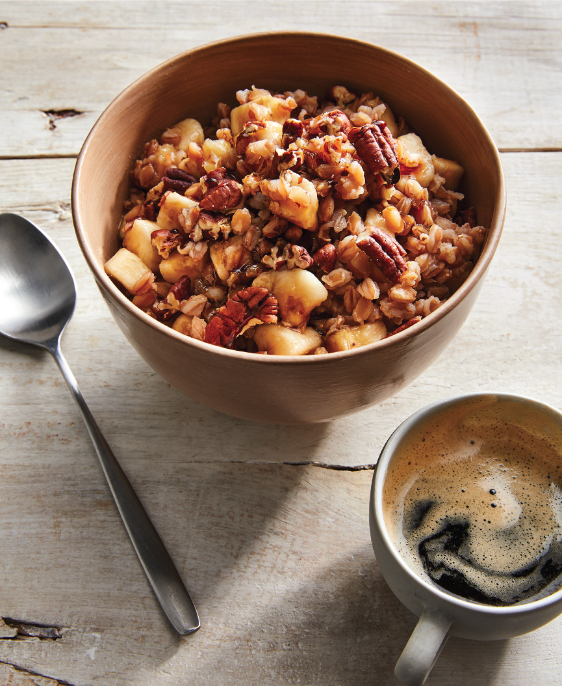

<h1>STOVETOP OVERNIGHT OATS WITH BANANAS AND PECANS</h1>

<!--
    MAKES: 4 servings DIFFICULTY: Easy
These overnight oat groats, also known as groatmeal, are a quick and easy way to have a hearty, flavorful breakfast.
1 cup oat groats
2 ripe bananas
¼ teaspoon ground nutmeg
2 tablespoons chopped pecans
Date Syrup (here) (optional)
The night before, bring 2 cups of water to a boil in a medium saucepan. Add the oat groats, cover, and return to a boil for 2 minutes. Remove the pan from the heat. Set aside, covered, until morning.
The next morning, return the covered saucepan to the stovetop. Remove the lid and cook over medium heat, stirring occasionally, for 6 to 8 minutes, or until the oats are tender and heated through.
If all the water is absorbed before the oats become tender, add up to ½ cup of additional water and continue to cook while stirring occasionally for a few more minutes until tender.
Peel and chop the bananas and add to the oats along with the nutmeg. Cook, stirring, over low heat for 1 to 2 minutes to combine and blend the flavors. To serve, spoon into serving bowls and sprinkle with chopped pecans and a swirl of Date Syrup (if using).
It's all about you! Customize your morning oat groats—a.k.a. groatmeal —with any combination of these toppings to satisfy your palate: sliced bananas, blueberries, strawberries, raspberries, blackber-ries, chopped peaches, chopped mango, slivered almonds, chopped pecans, chopped walnuts, sunflower seeds, pumpkin seeds, chia seeds, hemp seeds, cacao nibs, ground flaxseeds, dried goji berries, dried cranberries, ground cinnamon, pumpkin pie spice, ground nutmeg, and any other whole food goodness that tickles your fancy!
-->